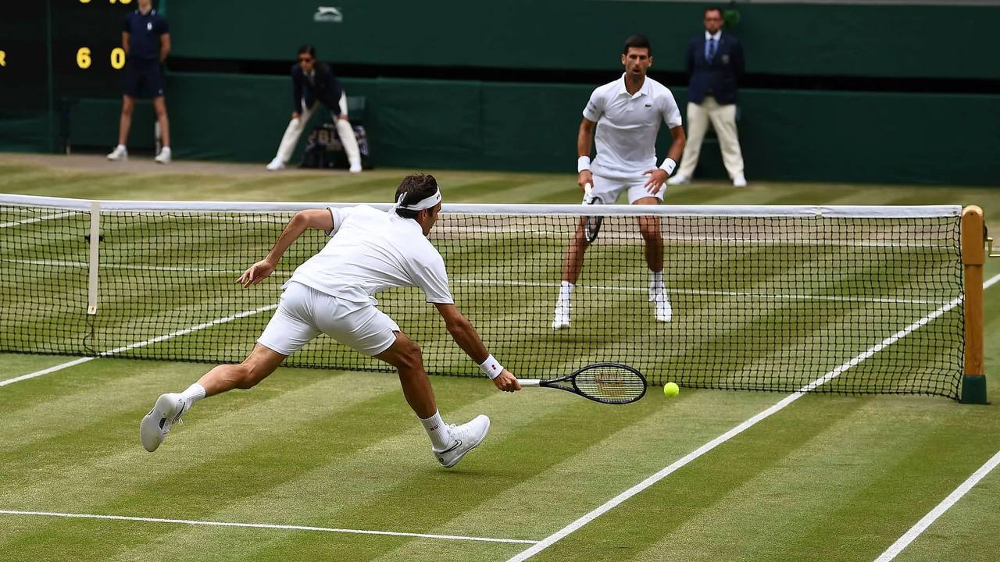
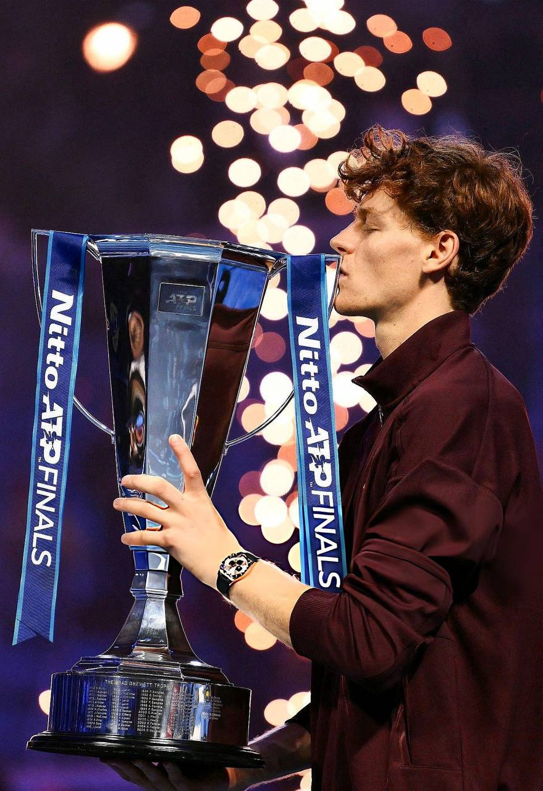
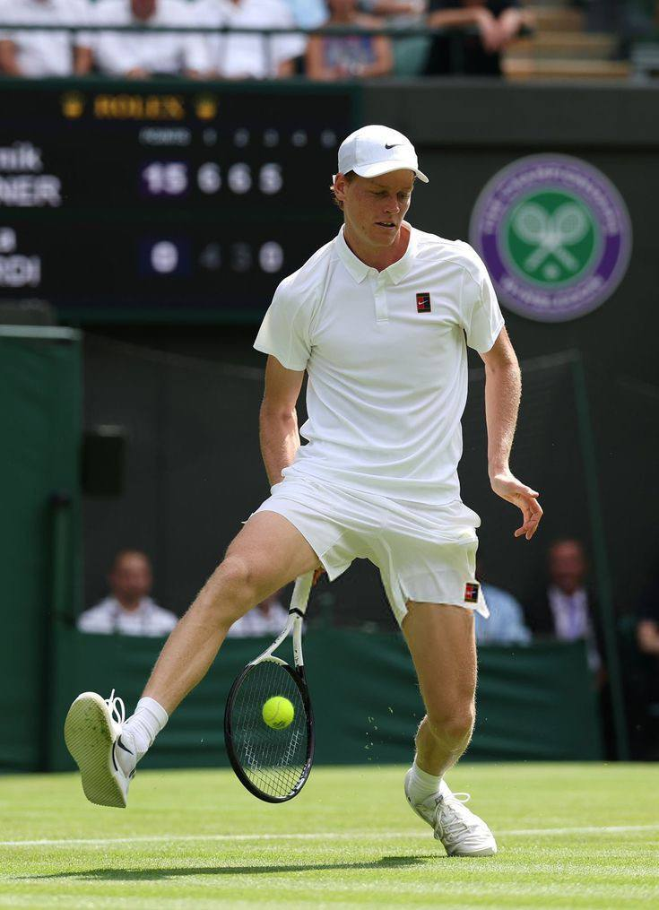
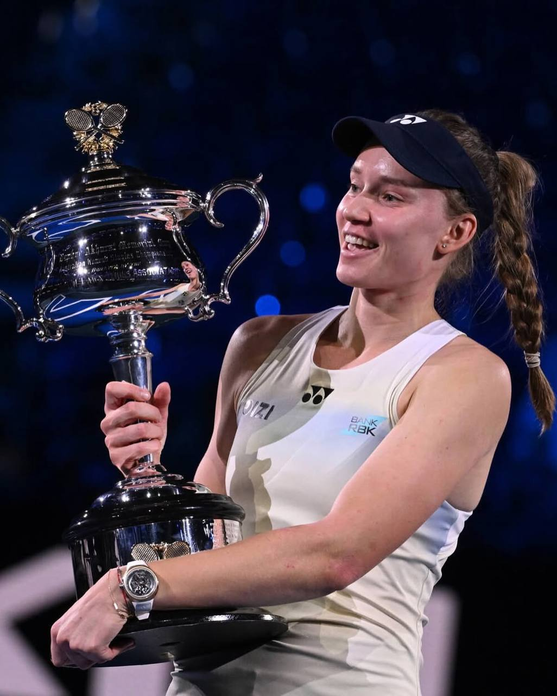
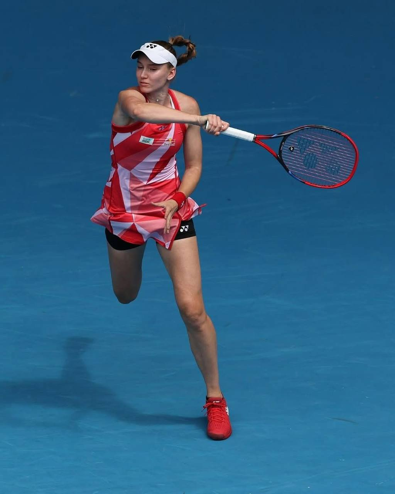
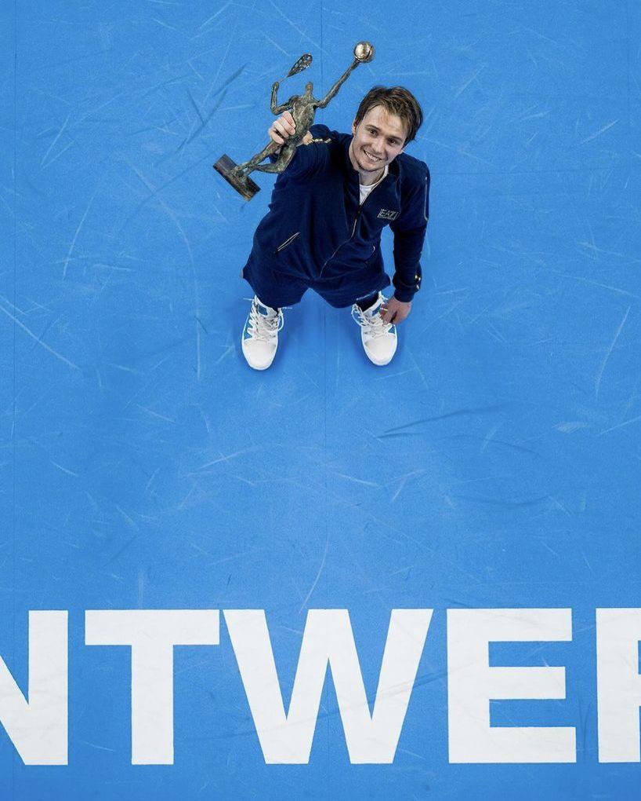
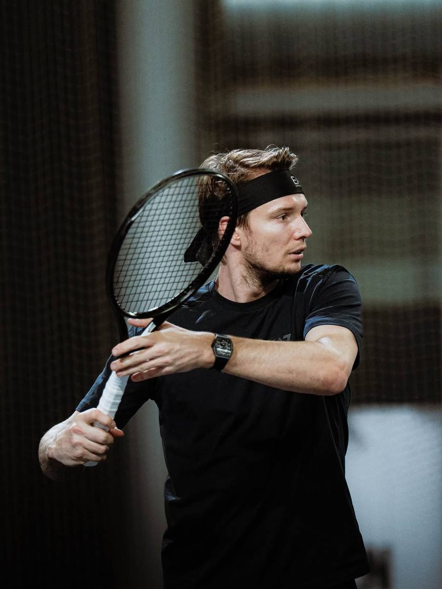

Jannik Sinner — итальянский профессиональный теннисист, один из сильнейших игроков нового поколения



Elena Rybakina — профессиональная теннисистка, представляющая Kazakhstan.


Alexander Bublik — профессиональный теннисист, представляющий Kazakhstan. Он известен своим необычным и зрелищным стилем игры.

.